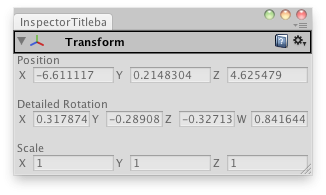

EditorGUILayout翻译：U_鹰
- BeginHorizontal
- BeginScrollView
- BeginToggleGroup
- BeginVertical
- ColorField
- CurveField
- EndHorizontal
- EndScrollView
- EndToggleGroup
- EndVertical
- EnumPopup
- FloatField
- Foldout
- InspectorTitlebar
- IntField
- IntPopup
- IntSlider
- LabelField
- LayerField
- MinMaxSlider
- ObjectField
- PasswordField
- Popup
- PrefixLabel
- PropertyField
- RectField
- Slider
- Space
- TagField
- TextArea
- TextField
- Toggle
- Vector2Field
- Vector3Field
- Vector4Field
EditorGUILayout.InspectorTitlebar 检视面板标题栏
static function InspectorTitlebar (foldout : bool, targetObj : Object) : bool
Parameters参数
- foldoutThe foldout state shown with the arrow.
带箭头显示折叠状态 - targetObjThe object (for example a component) that the titlebar is for.
用标题栏的物体
bool - The foldout state selected by the user.
返回布尔，由用户选择的折叠状态。
Description描述
Make an inspector-window-like titlebar.
制作一个检视面板的标题栏。

Create a custom inspector that shows the X,Y,Z,W quaternion components on the rotation.
创建一个自定义检视面板，显示X,Y,Z,W旋转四元数组件。
// Create a custom transform inspector that shows the X,Y,Z,W quaternion components
// instead of the rotation angles.
//创建一个自定义变换检视面板，显示X,Y,Z,W四元数组件，而不是旋转角度
class InspectorTitlebarUsage extends EditorWindow {
var fold : boolean = true;
var rotationComponents : Vector4;
var selectedTransform : Transform;
@MenuItem("Examples/Inspector Titlebar")
static function Init() {
var window = GetWindow(InspectorTitlebarUsage);
window.Show();
}
function OnGUI() {
if(Selection.activeGameObject) {
selectedTransform = Selection.activeGameObject.transform;
fold = EditorGUILayout.InspectorTitlebar(fold, selectedTransform);
if(fold) {
selectedTransform.position =
EditorGUILayout.Vector3Field("Position", selectedTransform.position);
EditorGUILayout.Space();
rotationComponents =
EditorGUILayout.Vector4Field("Detailed Rotation",
QuaternionToVector4(selectedTransform.localRotation));
EditorGUILayout.Space();
selectedTransform.localScale =
EditorGUILayout.Vector3Field("Scale", selectedTransform.localScale);
}
selectedTransform.localRotation = ConvertToQuaternion(rotationComponents);
EditorGUILayout.Space();
}
}
function ConvertToQuaternion(v4 : Vector4) {
return Quaternion(v4.x, v4.y, v4.z, v4.w);
}
function QuaternionToVector4(q : Quaternion) {
return Vector4(q.x, q.y, q.z, q.w);
}
function OnInspectorUpdate() {
this.Repaint();
}
}The titlebar has an arrow for foling out, a help icon, and a settings menu that depends on the type of the object supplied.
标题栏有可折叠箭头，帮助图标和设置菜单，取决于物体支持的类型。
最后修改：2011年7月14日 Thursday 19:20